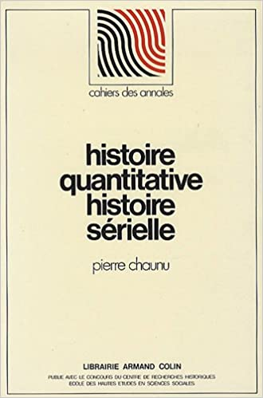
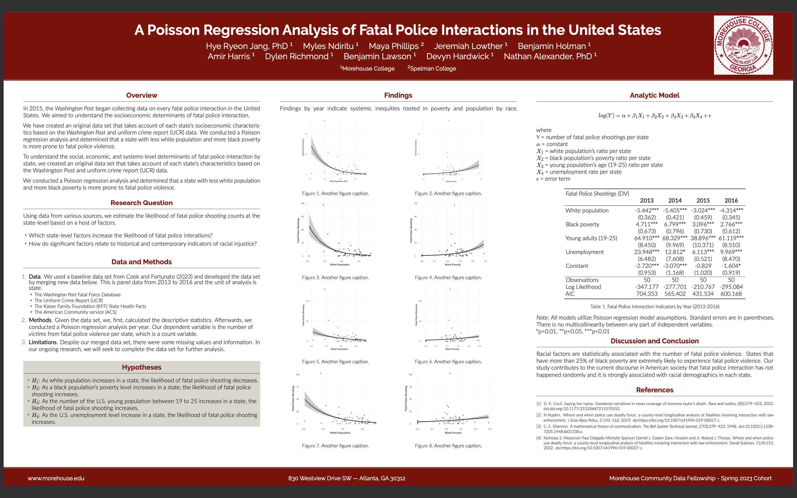

The Principles of Reconstruction: Still a Viable Route to Full Citizenship
Quantitative Histories Workshop
The Principles of Reconstruction: Still a Viable Route to Full Citizenship
A focus on “Data Wells”: Data + Ida B. Wells-Barnett
We use the term “Data Wells” to describe how we practice the identification, input, and storage of what can be termed as critical insights data, or CIDs.
We use information in databases in four ways:
studying problems in the quantification of historical information across various axes: time, social constructs, and/or systemic issues,
data identification and wrangling,
data analysis and communication, and
modeling abstract inquiries.
We begin our analysis with Ida B. Wells-Barnett’s organization and analysis of lynching.
We describe “Data Wells” of U.S. state violence using quantitative history as a frame.
Quantitative Histories Workshop
Curriculum & software development collective
and
research lab
Quantitative history
Quantitative history considers methods and approaches to artifacts as data and information.
Historians like Pierre Chanu (text to right) are centered in traditional texts; more perspectives are uncovering troubling practices with regard to race1.
Despite long-standing critiques, there are few critical dimensions in quantitative history narratives.

Racialization and U.S. State Violence
Today, we will discuss race and racialization in data wells of state sponsored violence:
. . .
- Lynching
. . .
- Policing
. . .
- Prisons
Ida B. Wells-Barnett on lynching
- Personal experience. In 1892, a close friend of Ida B. Wells-Barnett was lynched. Wells-Barnett, a known activist, community organizer, and journalist, would generate quantitative indicators of lynching as state violence.
. . .
- Intuition and method. Like many Black communities at the time and other allies, Wells-Barnett acknowledged both the personal (micro) social forces of racism and the systemic (macro) nature of white racial violence. In this case, this violence was expressed through the practice of lynching.
. . .
- Impact. Wells-Barnett’s databases, and the use of number and quantification have a profound impact on the current view of state-sponsored racial violence.
Lynching
Caitlin Pollock has created software based on a series of extracted data from Wells-Barnett’s work. Although the data provides for quick loading and analysis, it does require some data wrangling.
Content for 1893
Content for 1894
Content for 1895
Concerns
Pollock deals with the issue of erasure in their development of the data.
Sandra Bland, killed by police in 2015, Texas
Breonna Taylor, killed by police in 2020, Louisville
Rayshard Brooks, killed by police in 2020, Atlanta
Rayshard Brooks, killed by police in 2020, Atlanta
George Floyd, killed by police on May 25, 2020, Minneapolis
Fatal police interactions

Campus Policing
Campus Policing Timeline
Prisons
“In 2021, Black Americans were imprisoned at 5.0 times the rate of whites, while American Indians and Latinx people were imprisoned at 4.2 times and 2.4 times the white rate, respectively.” (The Sentencing Project, 2023)
“One in five Black men born in 2001 is likely to experience imprisonment within their lifetime, a decline from one in three for those born in 1981. Pushback from policymakers threatens further progress in reducing racial inequity in incarceration.” (The Sentencing Project, 2023)
Prisons
The U.S. Bureua of Justice Statistics maintains records of federal and state prison populations2.
Prisons
Content for federal
Content for state
Content for federal and state
Racism vs. Anti-Blackness
In a 2020 NY Times article, kihana miraya ross chronicles the realities of anti-Blackness. ross (2020) deals with the related but differing functions of racism and anti-Blackness.
ross notes that “‘racism’ fails to fully capture what black people in this country are facing.”
ross continues by noting that “Anti-blackness is one way some black scholars have articulated what it means to be marked as black in an anti-black world.”
Broadly, ross defines anti-Blackness as society’s inability to recognize Black people’s humanity.
. . .
Thank you
. . .
Thank you for joining us and citing today’s presentation.
Alexander, N., Davis, K., Ghali, B., Stewart, K., & La Cour, G. (2024, April 26). The Principles of Reconstruction: Still a Viable Route to Full Citizenship. The 2024 Bob Moses Conference. Online.
Quantitative Histories Workshop - The Principles of Reconstruction: Still a Viable Route to Full Citizenship Quantitative Histories Workshop - The Principles of Reconstruction: Still a Viable Route to Full Citizenship Quantitative Histories Workshop - The Principles of Reconstruction: Still a Viable Route to Full Citizenship Quantitative Histories Workshop Quantitative Histories Workshop Quantitative Histories Workshop
Vovelle, Michel (1987). Bourgeoisies de province et Revolution. Presses Universitaires de Grenoble.↩︎
Source of data: Carson (2022). Prisoners in 2021 – Statistical tables. Bureau of Justice Statistics.↩︎